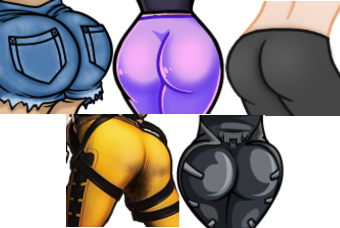
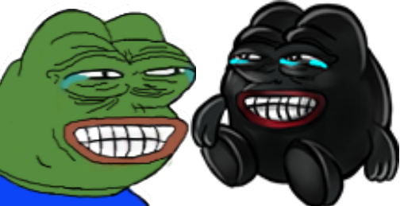

The Daily Bate
Issue No. 2 | Friday SEP 20, 2019
SpongeBob's Bikini Bottom Sparks Controversy
Twitch chats are buzzing, hectic sprawls of text, dotted throughout with graphics known as emotes. While many are available to all users, some of the most loved images on the site are the emotes enabled only for those who have subscribed to a certain streamer. They are used as a form of expression, a comedy, and are heavily tied to the identity of a stream community. As such, it was with heavy hearts that users had to farewell a number of popular emotes this week, as Twitch removed them from the site.
forsenDiglett removed
With over one million followers and, at the time of writing, nine thousand subscribers, Sebastian "Forsen" Fors is one of the largest streamers on the platform, with some of the most widely used emotes. On the 17th of September, Fors tweeted that his "forsenDiglett" emote had been removed.
 Above: The now-removed forsDiglett emote
Above: The now-removed forsDiglett emote
Although the redaction of forsDiglett was not unexpected or unfathomable by any stretch of the imagination, it depicted a child being held at the throat, an act in flagrant violation of the site's terms, it was nonetheless a disappointment to some of the streamers oldest subscribers.
SpongeBob's ripped pants rejected
World-record holding speedrunner and streamer, "SHiFT", generally enjoys the same benefits as all partnered broadcasters on the platform, one of which is an extensive number of custom emote slots. One emote, however, was too egregious for Twitch's moderation team to allow. The vile image in question was a recreation of a scene from the popular children's television programme, SpongeBob Squarepants.
 Above: SHiFT's tweet announcing his emote's rejection, including a screenshot of the image in question.
Above: SHiFT's tweet announcing his emote's rejection, including a screenshot of the image in question.
A lesser known benefit of being a partnered streamer on Twitch.tv is the ability to have custom emotes automatically approved, skipping the verification process, so long as a user's account is in good standing. Unfortunately, on September 14th, another of Shift's emotes was removed from his channel. A depiction of SpongeBob, standing beside the letter "F" was removed from his channel for violating twitch's guideline against emotes containing "individual letters/characters". This guideline was set in place so that streamers could not sell character sets, which could then be used by unscrupulous individuals to avoid standard chat filters. The deletion of his emote also caused the revocation of his channels "good-standing" status, and thus his ability to have emotes auto-approved.
Why the fascination with SpongeBob? The streamer holds a number of world record speed-runs on the title, SpongeBob SquarePants: Battle for Bikini Bottom and had made the character a theme of his channel.
The removal of his emote approval privileges led to his new emote submission undergoing manual verification by a team at Twitch, who deemed it inappropriate for upload. Upon further inquest, staff revealed that it was declined due to it being classed as "sexual content". The response stated that the site disallowed "imagery of sexual content or nudity [...] which contained sexualized torsos or bodily fluids".
Although classifying a cartoon sponge's exposed undergarments as a "sexualized torso" was a point of contention within the community, controversy circled the emotes rejection as it appeared to many as a far tamer version of other "butt" emotes which were permitted. This raised questions about inequitable treatment of streamers on the platform.

Above: Various "butt-style" emotes which are currently available on the site.
Top-Left: inkyThicc by Inky; Top-Middle: missquThicc by MissQueenKawaii; Top-Right: anomTHICC by Anomaly; Bottom-Left: ammoButt by Amouranth; Bottom-Right: kittyThic by KittyPlays.
Top-Left: inkyThicc by Inky; Top-Middle: missquThicc by MissQueenKawaii; Top-Right: anomTHICC by Anomaly; Bottom-Left: ammoButt by Amouranth; Bottom-Right: kittyThic by KittyPlays.
Pepe the Frog's Blackface Debacle
On the 16th of September Czech streamer Honza "Sweezy" Kulich not only faced the loss of one of his custom emotes but was also met with a one-day suspension for "hateful conduct".
Kulich had adapted a popular frog emote, PepeLaugh, used in over 25 thousand channels through the FrankerFacez browser extension, to his liking. The streamer changed the character's skin tone from green to black and increased the hue on its lips. Unfortunately, this combination of large, bright red lips and darker skin, drew uncomfortable parallels to "blackface".

Above-Left: Popular emote "PepeLaugh",
Above-Right: Kulich's removed "blackface" emote.
Above-Right: Kulich's removed "blackface" emote.
The streamer, however, claimed to have been unaware of the connotations of the emote, stating that due to his European upbringing, he'd had no experience with the concept. He asserted that he was "not racist" and that he had simply selected the new skin tone because he found it aesthetically pleasing.
While these claims were not without their sceptics, as it had been his first infringement, Kulich was only penalised with a one-day ban from the platform, and the removal of his emote.